Brain response
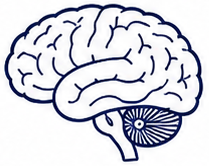
Modulation of neural circuits and neuroendocrine signaling (e.g., HPA axis, ANS).
A dynamic network linking mind, brain, and immune function
PNI explains how psychological processes, neural–endocrine–autonomic regulation, and immune responses interact through bidirectional signaling.
Psychological experiences influence stress appraisal, mood, and behavior.
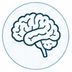
Neural, endocrine, and autonomic systems coordinate adaptive responses.
Immune activity is shaped by neuroendocrine signals and helps maintain balance.
Bidirectional feedback supports recovery, stability, and long-term resilience.
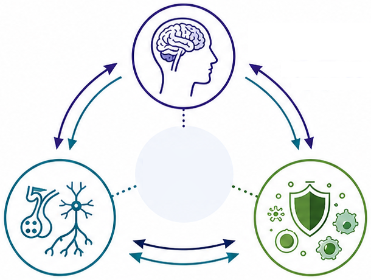
Cognition, emotion, stress appraisal
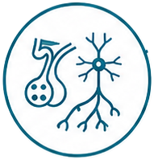
HPA axis • Autonomic nervous system
Cytokines • Neurotransmitters
Immune cells • Cytokines
Inflammatory balance • Defense
How daily life shapes the stress–regulation landscape
The amount, intensity, and duration of stressors in daily life.
Affective states that influence appraisal, motivation, and coping.
Duration, continuity, and restorative quality of sleep.
Quality of relationships, connection, support, and belonging.
Physical activity, nutrition, substance use, and other daily habits.
Pollutants, toxins, noise, temperature, light, and other external factors.

Modulation of neural circuits and neuroendocrine signaling (e.g., HPA axis, ANS).
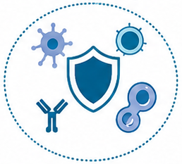
Altered immune activity, inflammation, and host defense capacity.
Central coordination of adaptive responses
Evaluation of internal and external demands guides neural and hormonal responses.
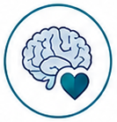
Prefrontal–limbic circuits modulate emotional reactivity and behavioral responses.
Hypothalamic–pituitary–adrenal activation regulates cortisol release and stress responsivity.
Neural signals influence hormone secretion and systemic physiological processes.
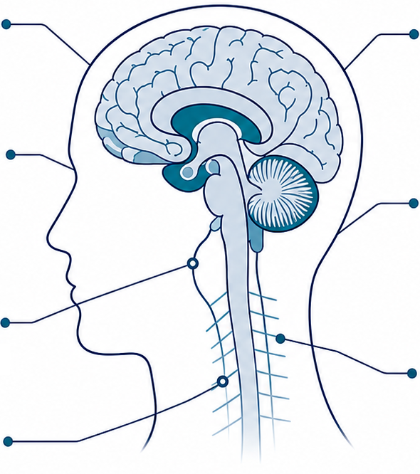
Dynamic balance between sympathetic and parasympathetic activity supports homeostasis.
Mobilizes energy and prepares the body for challenge or threat responses.
Promotes restoration, digestive function, and recovery through vagal pathways.
How neural and endocrine signals shape immune balance
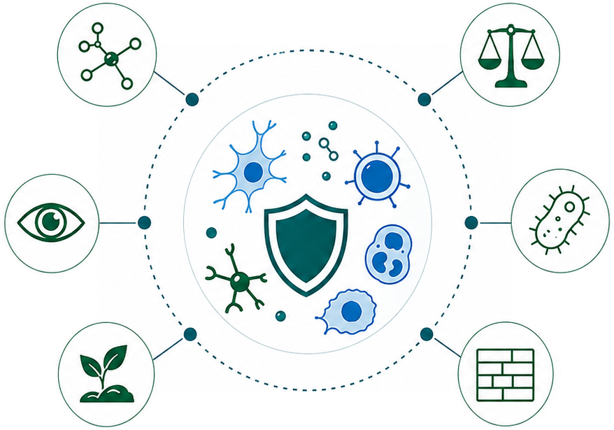
Cellular messengers coordinate immune communication and response.
Monitors for abnormal cells and supports immune homeostasis.
Supports regeneration and resolution following injury or immune activation.
Maintains productive inflammation while limiting excessive responses.
Recognizes and eliminates pathogens to protect the body.
Strengthens physical and mucosal barriers to reduce pathogen entry.
Immune signals also feed back to the brain and behavior
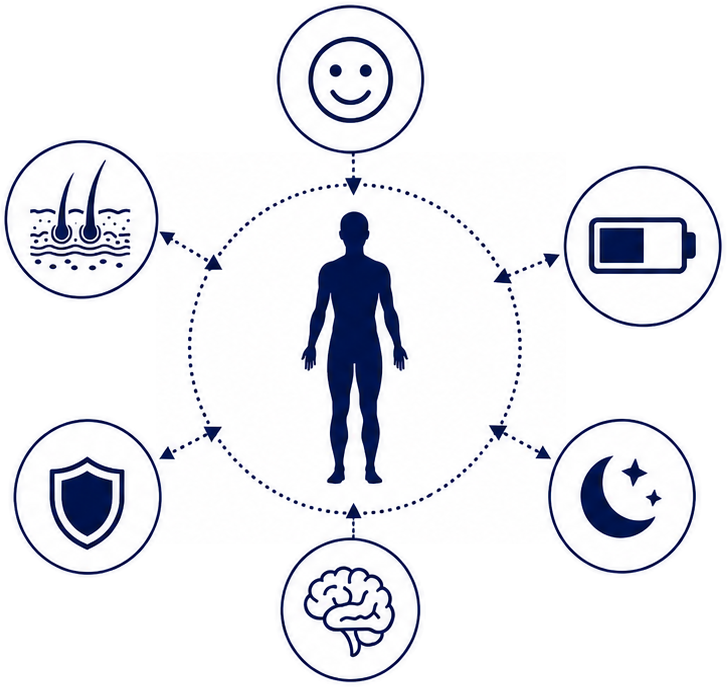
Immune signals influence mood regulation and resilience to stress.
Immune activity shapes energy levels and recovery capacity.
Immune signals help regulate sleep quality and circadian rhythms.
Immune–brain communication influences cognitive function, focus, and motivation.
Immune feedback enhances stress adaptation and physiological stability.
Immune mediators support skin barrier integrity and homeostasis.
From psychological challenge to adaptation or dysregulation
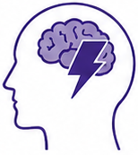
Stressors, emotions, and life demands are appraised and influence regulatory load.
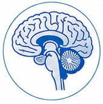
The brain integrates information and activates neuroendocrine and autonomic pathways.
Signals regulate immune activity and inflammatory balance to protect and restore.
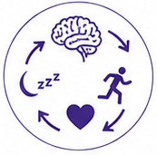
Immune and neurochemical signals feed back to the brain and body systems.
The system adapts and maintains balance—or dysregulation accumulates, increasing vulnerability.